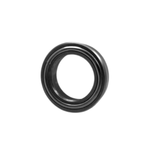
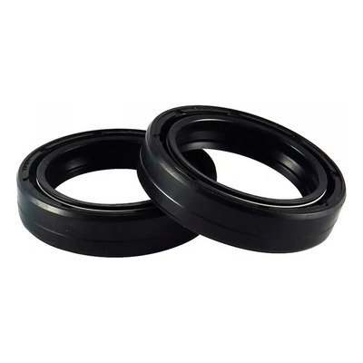
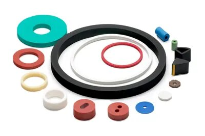

Aneis O-rings
Os anéis O-Rings são componentes em forma de anel, usados principalmente em sistemas de vedação para evitar a passagem de fluidos e gases. São amplamente utilizados em várias indústrias, como automotiva, farmacêutica e de alimentos. Fabricados em diversos materiais, incluindo borracha sintética e elastômeros, os O-Rings são conhecidos pela sua confiabilidade e eficiência em aplicações de alta pressão e temperatura.

Gaxetas
Gaxetas são elementos de vedação utilizados em máquinas e equipamentos para prevenir vazamentos de fluidos. Podem ser encontradas em aplicações como bombas, válvulas e flanges. As gaxetas da Retenfort são fornecidas em borracha de alta qualidade, proporcionando vedação eficaz e resistência ao desgaste, o que resulta em manutenção reduzida e maior durabilidade dos equipamentos.

Retentores
Retentores são dispositivos projetados para impedir a fuga de lubrificantes e a entrada de contaminantes em sistemas mecânicos, como motores, transmissões e redutores. A Retenfort oferece uma variedade de retentores em diferentes formatos e materiais, garantindo um desempenho excelente sob condições exigentes. Nossos retentores são essenciais para prolongar a vida útil dos equipamentos e melhorar a eficiência operacional.

Peças Especiais
Na Retenfort, também desenvolvemos peças especiais de borracha sob medida, conforme amostras ou desenhos fornecidos pelos clientes. Essa personalização nos permite atender às necessidades específicas de cada aplicação e setor industrial. Nossas peças especiais são projetadas para otimizar o desempenho e a eficiência, garantindo que seus projetos sejam executados com precisão e qualidade.
